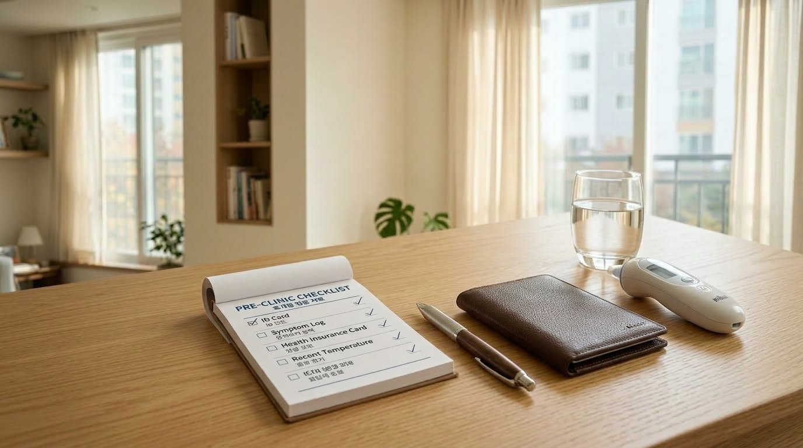

선선한 가을바람이 불어오면 가족 건강을 위해 독감 백신 접종을 서두르게 됩니다.
접수 창구에서 "국산 맞으시겠어요, 만 원 더 비싼 수입 맞으시겠어요?" 물어보면 덜컥 국산 수입 백신 종류 사이에서 깊은 고민에 빠지게 됩니다.
여기에 무료 대상 혜택까지 겹치다 보니 어떤 선택이 현명한지 헷갈리기 쉬운데요. 결론부터 명쾌하게 짚어 드리겠습니다.
| "수입 백신이 더 오래 갈까?" 국산과 수입 백신의 효과 비교


수입산이 더 비싸니 면역이 더 오래 가거나 몸살이 덜하지 않을까 짐작하시는 분들이 많습니다.
공인 보건자료를 살펴보면 국내 유통 승인을 받은 모든 4가 백신은 세계보건기구(WHO) 권고 4대 균주를 동일하게 함유하고 있습니다.
A형 바이러스 2종과 B형 바이러스 2종 항원이 똑같이 들어있어 항체 형성률과 감염 억제력은 의학적으로 충분히 대등합니다.
접종 후 2주 뒤부터 방어선이 형성되어 약 5~6개월 동안 든든하게 유지되는 기간 역시 차이가 없습니다.
| 달걀 알레르기 있다면 필독! 유정란 배양 vs 세포 배양 선택 기준


백신을 고르실 때 원산지보다 훨씬 중요한 핵심은 바로 바이러스 배양 제조 방식입니다.
전통적인 방식은 닭의 알에서 바이러스를 키우는 유정란 배양 방식입니다.

만약 평소 계란을 드시고 두드러기나 가려움 같은 과민 반응이 있으셨다면 유정란 대신 동물세포 무균 배양 백신을 고르시는 편이 현명합니다.
세포 배양 방식은 계란 성분이 전혀 남지 않아 달걀 알레르기가 있는 성인이나 어린이도 마음 놓고 접종받으실 수 있습니다.
달걀 알레르기가 없는 일반 성인이라면 두 방식 모두 안심하고 맞으셔도 좋습니다.
| 오늘(10월 6일)부터 시작! 어르신 무료 접종 일정과 동네 알뜰 접종 꿀팁

독감 주사는 성인의 경우 건강보험이 적용되지 않는 비급여 항목입니다.
동네 의원마다 2만 5천 원부터 4만 원대까지 비용 편차가 생기는 이유도 접종처마다 매입 단가와 관리비를 감안해 자율적으로 정하기 때문입니다.
포털 검색창 대신 건강보험심사평가원 누리집이나 건강e음 앱에서 비급여 진료비 정보를 열람하시면 동네 착한 접종비를 한눈에 비교하실 수 있습니다.


부모님과 자녀의 무료 지원 일정도 꼭 챙겨보세요.
2026년 10월 6일 오늘부터 75세 이상 어르신 무료 접종이 개시되었으며, 70~74세는 2026년 10월 12일부터, 65~69세는 2026년 10월 15일부터 순차적으로 진행됩니다.
어린이 무료 지원 대상도 이번 절기부터 중학교 2학년(14세, 2012년생)까지 확대되어 혜택이 더욱 넓어졌습니다.


2. 접종 후 30분간은 대기실에 앉아 이상 반응이 없는지 지켜보신 뒤 귀가하세요.
3. 당일에는 무리한 운동이나 과음을 삼가고 미온수를 넉넉히 마시며 편안히 쉬어주세요.

약효 차이가 없다는 점을 기억하시고, 알뜰한 보건 혜택으로 온 가족의 따뜻하고 든든한 겨울을 준비해 보세요!
댓글로 소중한 경험과 궁금한 점을 편하게 남겨주세요! 🍯
자녀 독감 확진 시 해열 후 안심 격리 원칙과 진료확인서 발급 요령도 미리 챙겨두세요!
- 보건당국 국가건강정보포털: 2026-2027절기 인플루엔자 국가 지원 접종 지침
- 식품안전 보건당국: 계절인플루엔자백신 국가출하승인 및 허가 정보
- 건강보험심사평가원: 비급여 진료비 정보 공시 제도 안내
- 감염병 관리 법령 제24조: 정기접종 조항